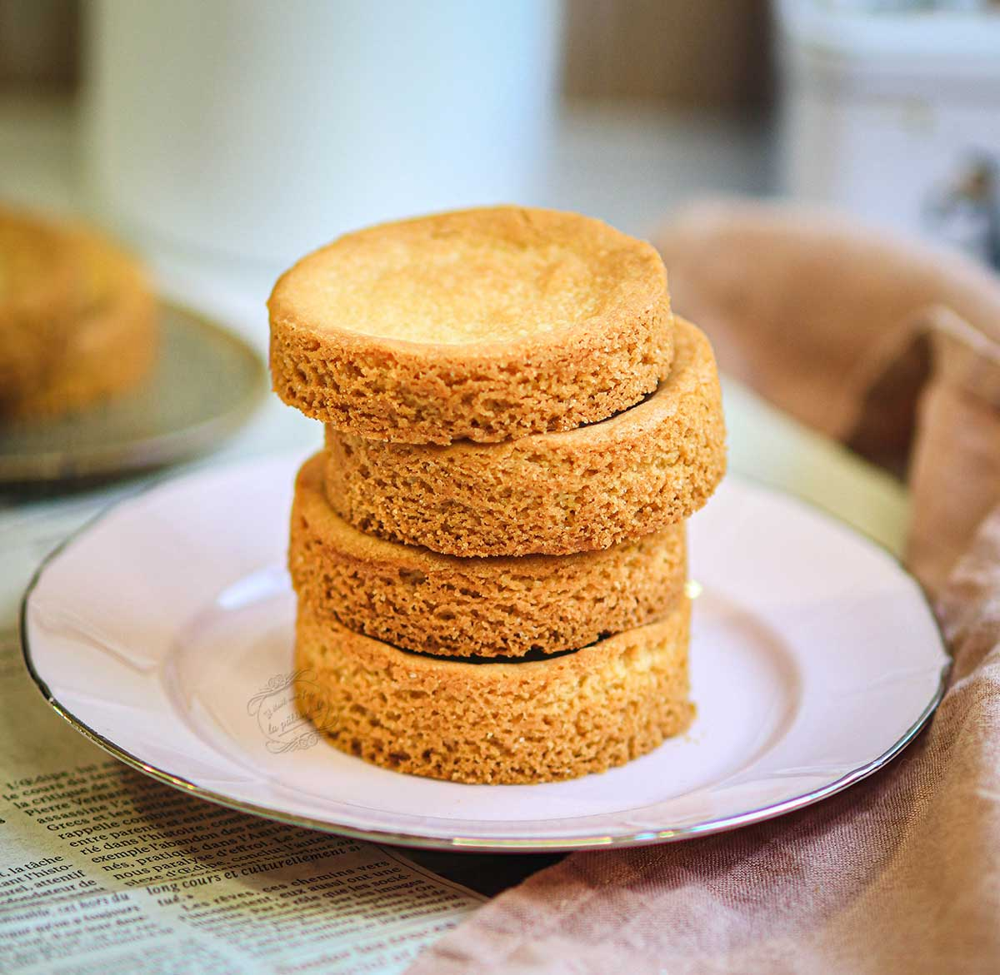
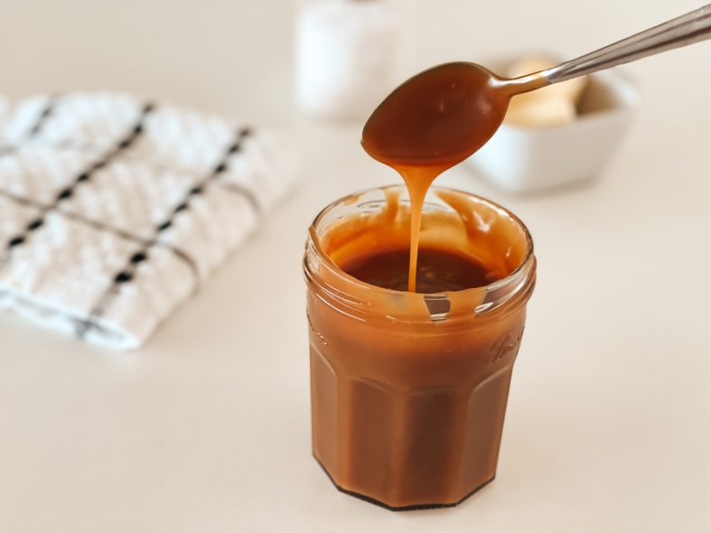
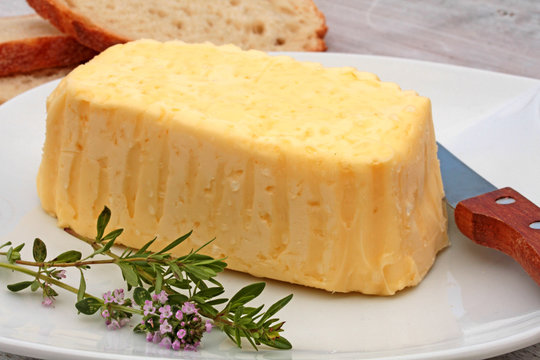

Meilleur spacialité bretonne


| Casement | Nom | Pourquoi c'est si bien | Pour aller plus loin |
|---|---|---|---|
| 6 | Kouign Amann | Une bouché permet de ne pas manger pendant 6 jour. | |
| 5 | Les palets bretons | Peu remplacer les roues d'un skate. |  |
| 4 | Le drapeau | Le plus beau mélange de couleur jamais fait . | |
| 3 | Le caramel bueure salé | Trop gras, trop sucrée, trop salé. |  |
| 2 | Le beurre au cristeau de sel | Marche très bien étaler sur un Kouign Amann. |  |
| 1 | Le prenom Yann | La perfection en 4 lettres. |